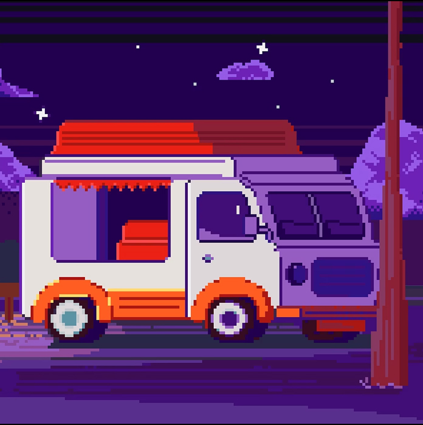

Фритрек и нулевой спринт: Подготовка к работе

Это было самое начало пути. На этом этапе важно было проникнуться основами и настроиться на учёбу. И, возможно, подумать, как новые знания могут повлиять на ваше будущее.
В начале всё казалось новым: редактор, теги, даже названия файлов. Я ещё не представляла, как из этих деталей получится сайт. Но любопытство оказалось сильнее растерянности — захотелось попробовать и увидеть результат.